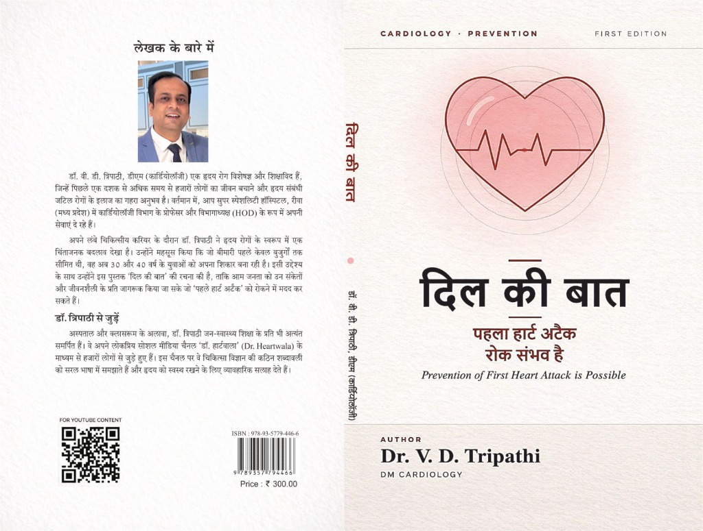

Dr. V.D. Tripathi
is Dr Heartwala
Dr. V.D. Tripathi (MD, DM) is an Interventional Cardiologist with 10+ years of post-DM clinical experience in cardiovascular medicine. Known on social media as Dr Heartwala, he shares educational guidance on preventive cardiac care and heart health.
Specialist
Coronary Interventions
10+
Years Post-DM Experience
5,000+
Successful Procedures
10k+
Happy Hearts Treated
5,000+
Social Media Community
Key Specializations
Angioplasty & Angiography
Minimally invasive procedures to diagnose and treat blocked coronary arteries using cutting-edge drug-eluting stents.
Device Implantation
Expert implantation of Pacemakers, ICDs, and CRT devices to manage arrhythmias and advanced heart failure.
Valvular & Structural Care
Advanced non-surgical, catheter-based interventions for valvular diseases and structural cardiac anomalies.
Clinic Appointment
Vision CardioMetabolic Care
Senior Cardiologist: Dr. V.D. Tripathi (MD, DM Cardiology)
Book your in-clinic consultation for coronary care, pacemaker evaluation, hypertension, chest pain diagnosis, and preventive cardiac checkups directly via Eka Care. Access instant slot availability, consultation fee details, and patient feedback.
Instant Slot Confirmation
Select preferred consultation times, view live availability, and receive digital tokens via Eka Care.
Comprehensive Diagnostics
Complete cardiac evaluation including ECG, ECHO guidance, pacemaker checks, and interventional care.
Verified Patient Reviews
Read verified patient feedback, ratings, and experience reports on the official Eka Care portal.
Dr. V.D. Tripathi
MD, DM (Cardiology) | 10+ Yrs Post-DM Experience
"Dedicated to healing hearts and saving lives with precision and empathy."
Biography
Dr. V.D. Tripathi holds MD (General Medicine) and DM (Cardiology) degrees, with over 10 years of post-DM clinical practice in interventional cardiology. His clinical work includes coronary angioplasty, cardiac catheterization, and device implantation.
Known online as Dr Heartwala, Dr. Tripathi focuses on public health awareness, preventive cardiac measures, and lifestyle modifications for cardiovascular health.
Education & Training
-
10+ Years Post-DM Practice
DM in Cardiology
Super-specialty qualification followed by 10+ years of clinical practice in interventional cardiology, coronary angioplasty, hemodynamics, and pacemaker care.
-
Post Graduation
MD in General Medicine
Comprehensive training in internal medicine, diagnosing complex systemic illnesses.
-
Under Graduation
MBBS
Foundational medical education and residency rotating across clinical disciplines.
Clinical Philosophy
As an interventional cardiologist, my goal is not just to open blocked arteries, but to guide my patients toward sustainable heart health. Technology gives us the power to save lives in emergency situations, but lifestyle and education empower patients to lead longer, healthier lives.

दिल की बात
पहला हार्ट अटैक रोक संभव है
Dil Ki Baat: Prevention of First Heart Attack is Possible
About the Book / पुस्तक के बारे में
डॉ. वी. डी. त्रिपाठी (डीएम कार्डियोलॉजी) द्वारा लिखित "दिल की बात" एक जन-जागरूकता पुस्तक है। अपने नैदानिक अनुभव के दौरान, डॉ. त्रिपाठी ने हृदय रोगों के स्वरूप में एक चिंताजनक बदलाव देखा है। जो बीमारी पहले केवल बुजुर्गों तक सीमित थी, वह अब 30 और 40 वर्ष के युवाओं को अपना शिकार बना रही है।
इसी उद्देश्य के साथ उन्होंने इस पुस्तक की रचना की है, ताकि आम जनता को हृदय रोगों के लक्षणों, संकेतों और एक स्वस्थ जीवनशैली के प्रति जागरूक किया जा सके जो 'पहले हार्ट अटैक' को रोकने में मदद कर सकते हैं।
Key Takeaways / मुख्य बिंदु
- पहला हार्ट अटैक रोकना संभव है: वैज्ञानिक और व्यावहारिक तरीकों से दिल के दौरों को रोकने के उपाय।
- प्रारंभिक लक्षणों की पहचान: सीने में दर्द, भारीपन या अन्य ऐसे संकेतों को पहचानना जिन्हें लोग सामान्यतः अनदेखा कर देते हैं।
- युवाओं में हृदय स्वास्थ्य: 30 और 40 वर्ष की आयु के युवाओं में बढ़ते हृदय रोगों के कारणों और रोकथाम पर विशेष ध्यान।
- सरल भाषा में मार्गदर्शन: चिकित्सा विज्ञान की कठिन शब्दावली को आम बोलचाल की भाषा में समझाया गया है।
Cardiovascular Research & Publications
Connect on ResearchGate
Access peer-reviewed articles, preprints, citations, conference papers, and academic collaborations by Dr. V.D. Tripathi. View research statistics and stay updated with his latest cardiac findings.
Visit ResearchGate Profile